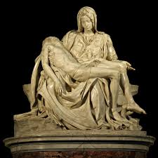

¿Cómo analizar una obra de arte?
Historia del Arte
Celia Almenara Moral
SE PRETENDE QUE EL ALUMNO DEMUESTRE LO SIGUIENTE:
ESQUEMA GENERAL DEL COMENTARIO DE UNA OBRA DE ARTE
Analiza la siguiente obra arquitectónica
- Estilo al que pertenece.
- Relación de la obra con la época histórica.

Ejemplo de cómo analizar una obra de arte